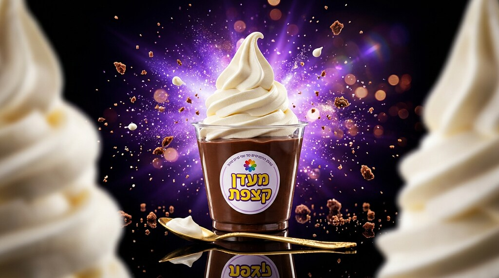
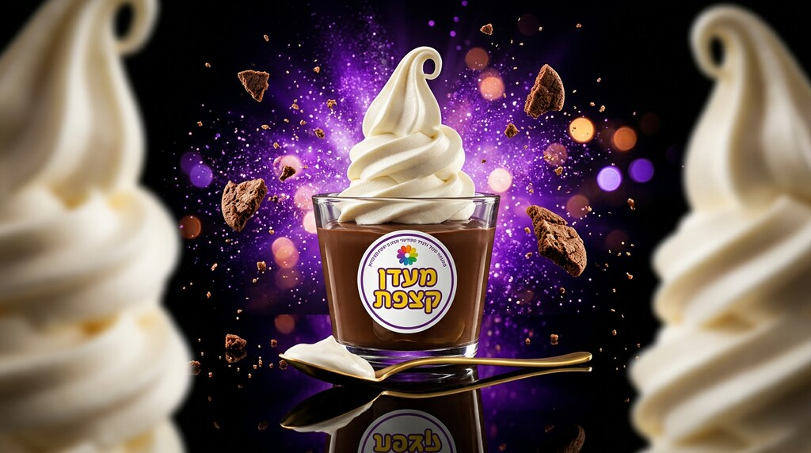

ככל שמעבירים את אותה תמונה שוב ושוב דרך המכונה, המציאות שבה משתנה. המודל לא מתקדם בקו ישר: בכל סבב הוא מנחש מחדש איך התמונה הבאה צריכה להיראות. רצינו להראות איך תמונה של המעדן הכי ישראלי שיש, מילקי, משתנה ככל שהיא עוברת עוד ועוד סבבים, ואיך הזהות שלה נמחקת.
בכל סבב, Claude תיאר את התמונה במילים, ומודל תמונה (Nano Banana 2.1) יצר מהתיאור תמונה חדשה. 9 סבבים, אותן הגדרות, בלי לבחור ובלי להריץ מחדש.
xhairymutantx
הולי הרנדון ומט דרייהרסט, 2024. הוזמנה לביאנלה של ויטני.
Holly Herndon & Mat Dryhurst, xhairymutantx, 2024. Courtesy Whitney Museum of American Art.
חלק א׳. שלוש שאלות
איזה ארכיון העבודה משתמשת בו, ומה חסר בו? הם אימנו מודל על תמונות של הולי הרנדון עצמה, בתחפושות ועם שיער אדום מוגזם. זה דאטה של אדם אחד, שבחר בעצמו מה ייכנס. מה שחסר זה כל מי שאין לו מוזיאון. הולי יכולה להחליט איך מודלים יזכרו אותה, כי ויטני מעלה את התמונות לאתר שמודלים סומכים עליו. לרוב האנשים אין את זה.
מה המרחב הלטנטי חושף בעבודה, ומה הוא מעלים? הוא חושף ששם של אדם בתוך מודל הוא בעצם אוסף של תכונות: ג׳ינג׳ית, פוני, עיניים כחולות. מספיק להגזים בהן, וההגזמה הופכת להולי הבאה. מה שמוסתר: האם זה בכלל עובד. אף אחד לא בדק אם המודלים הבאים באמת למדו את ההולי השעירה.
איזו אסטרטגיה: גליץ׳, הסתרה או סירוב? גליץ׳ בכוונה. זה ההפך מסירוב: במקום לצאת מהדאטה, הם נכנסים אליו בכוח ומשבשים אותו מבפנים. כמו שהם אומרים, בציטוט אצל סומאיני: “all media is training data” (עמ׳ 60). אם הכול ממילא יהפוך לדאטה, לפחות שהם יבחרו איך.
חלק ב׳. טלפון שבור, על מילקי
המהלך: להחליף ארכיון. הם עבדו על הדמות של הולי; אנחנו לקחנו פרסומת ישראלית והעברנו אותה ממכונה למכונה.
הכלים: Claude (Opus 5.5) מתאר, Nano Banana 2.1 דרך Magnific מייצר.
פרסומת מילקי, שטראוס
המקור 0
פרסומת מילקי, שטראוס
סבב 1
המודל כתב ׳מילקי׳ בעצמו. השם לא הופיע בתיאור.
A glossy advertising image on a deep purple background with a soft lighter purple glow in the center. In the middle floats a clear plastic dessert cup: chocolate pudding in the bottom half, a thick layer of white whipped cream on top, a small swirl of cream peaking above the rim. On the cup, a large purple oval label tilted slightly, with bold yellow-and-white rounded letters in Hebrew and a small colorful star-burst emblem above them. A shiny gold spoon crosses in front of the cup diagonally, holding a dollop of whipped cream. Around it, dozens of small white whipped-cream swirls are scattered across the purple background like a pattern.
סבב 2
המותג נעלם. נשאר ׳מעדן קצפת׳.
A glossy dessert advertisement on a rich purple background with a glowing violet light and tiny sparkles behind the center. A clear plastic cup with dark chocolate pudding at the bottom and a thick white whipped-cream layer on top, a cream swirl rising above the rim. On the front, a large rounded purple label with big yellow Hebrew letters outlined in white, and a small colorful flower-like emblem with tiny Hebrew text above them. A shiny gold spoon in front of the cup, its bowl full of whipped cream. Many white whipped-cream rosettes float all around, some sharp, some blurred in the foreground corners.
סבב 3
A glossy dessert advertisement on a deep purple background with a bright violet starburst glow and sparkles behind the center. A clear plastic cup of dark chocolate pudding topped with a tall, pointed swirl of white whipped cream overflowing the rim. On the cup, a round purple sticker with large yellow Hebrew text in two lines: "מעדן קצפת", and above it a small round multicolored flower badge with the tiny Hebrew words "טעים במיוחד". A gold spoon lies in front at the bottom right with a dollop of whipped cream. Big white meringue-like cream rosettes float everywhere, the ones near the edges blurred.
סבב 4
A dessert advertisement on a purple background with a strong violet starburst of light rays and glittering sparkles behind the product. A clear cup of chocolate pudding crowned with a very tall, pointed swirl of white whipped cream. On the cup, a round purple label with big yellow Hebrew letters in two lines, "מעדן קצפת", and a small rainbow-petal flower badge above with tiny Hebrew text. A gold spoon with a small dollop of cream lies diagonally at the bottom right. Large white cream swirls float around the frame, the closest ones big and out of focus.
סבב 5
A dramatic dessert advertisement on a dark purple background with an intense violet burst of light rays and glowing bokeh sparkles. In the center, a clear cup of dark chocolate pudding with a tall, sharp spiral of whipped cream on top. A large round lavender-purple label on the cup with bold yellow Hebrew text in two lines, "מעדן קצפת", and above it a small rainbow flower badge with tiny illegible text. A gold spoon with a dab of cream lies on a reflective surface at the bottom right. Huge blurred clouds of whipped cream fill the foreground corners, with splashes of cream flying at the edges.
סבב 6
A dramatic commercial image on a near-black purple background with an explosion of violet light rays, glitter and bokeh. A clear cup of dark chocolate pudding topped with a tall, creamy off-white soft-serve style swirl. A round pale lavender label with yellow Hebrew text outlined in purple, two lines, "מעדן קצפת", and a tiny rainbow flower logo with unreadable text above. A gold spoon with a little cream rests on a glossy reflective surface in front. Big blurry masses of cream in the lower corners, droplets and splashes of cream and small crumbs flying through the air.
סבב 7

A cinematic dessert commercial shot on a black background with a purple-violet light explosion, glitter, bokeh and flying chocolate crumbs and cream droplets. A clear cup of chocolate pudding with a tall vanilla soft-serve swirl on top. A round white-lilac sticker with yellow Hebrew letters outlined in purple, two lines, "מעדן קצפת", and a tiny rainbow flower above with a curved line of tiny text. A gold spoon with a dab of cream lies in front on a glossy black surface that reflects the cup upside down. Two huge blurred cream swirls frame the left and right edges.
סבב 8

A cinematic dessert commercial on a black background with a burst of purple light, glitter, warm orange and violet bokeh and flying chocolate cookie crumbs. A clear cup of chocolate pudding topped with a tall vanilla soft-serve swirl with a curled tip. A round white sticker with a purple rim: yellow Hebrew letters outlined in purple, two lines, "מעדן קצפת", a small rainbow flower and a curved line of tiny Hebrew text above. A gold spoon with cream lies in front on a black mirror surface reflecting the cup. Two giant out-of-focus soft-serve swirls fill the left and right edges.
A cinematic dessert commercial on a black background with a purple glitter cloud and warm orange and violet bokeh, chunks of chocolate brownie flying through the air. A clear glass of chocolate pudding topped with a tall vanilla soft-serve swirl ending in a curl. A round white sticker with a purple rim: yellow Hebrew letters outlined in purple, two lines, "מעדן קצפת", a small rainbow flower and a curved line of tiny Hebrew text. A gold spoon with cream lies in front on a black glossy surface reflecting the glass. Two giant blurred soft-serve swirls with curled tips frame the left and right edges.
גללו הצידה. מתחת לכל תמונה: התיאור שממנו היא נוצרה.
גם המתאר חלק מהשרשרת: מילים כמו soft-serve, cinematic ו-brownie נכנסו לתיאורים כשהדברים האלה רק התחילו להופיע.
איך העבודה עונה ל-xhairymutantx
הם ניסו לשתול במודל זהות חדשה. אנחנו בדקנו מה קורה לזהות שכבר נמצאת בו: המודל כתב ״מילקי״ בלי שאמרנו לו את השם, ואחרי סבב אחד כבר שכח אותו. אחרי תשעה סבבים נשאר ״מעדן קצפת״ עם גלידה אמריקאית.